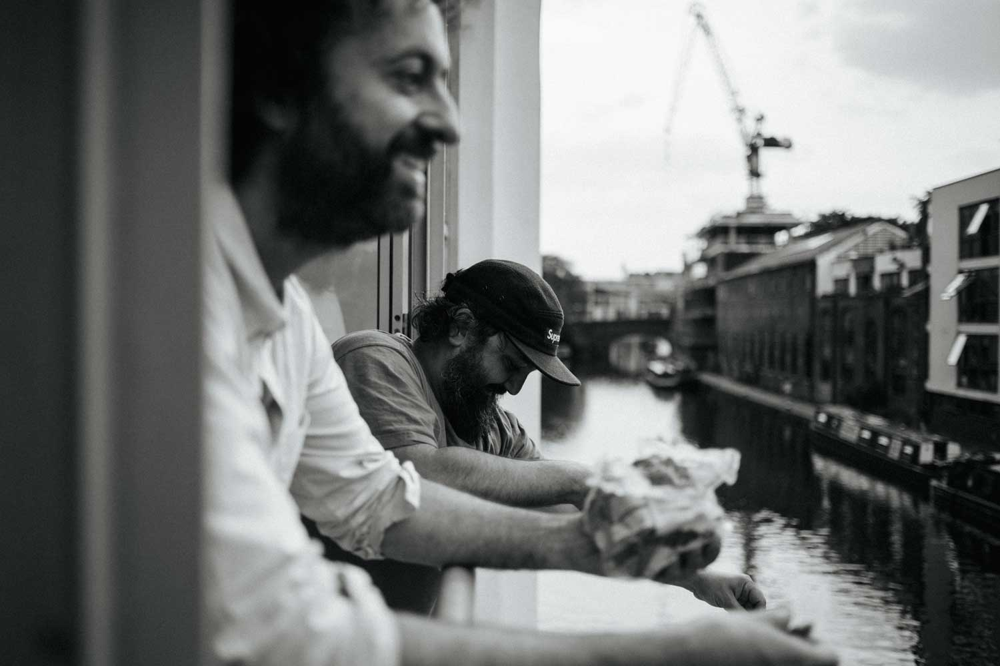
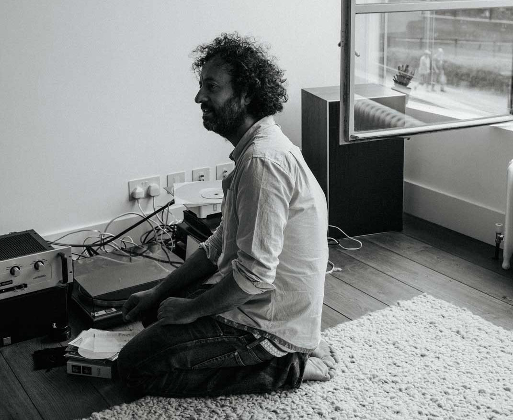
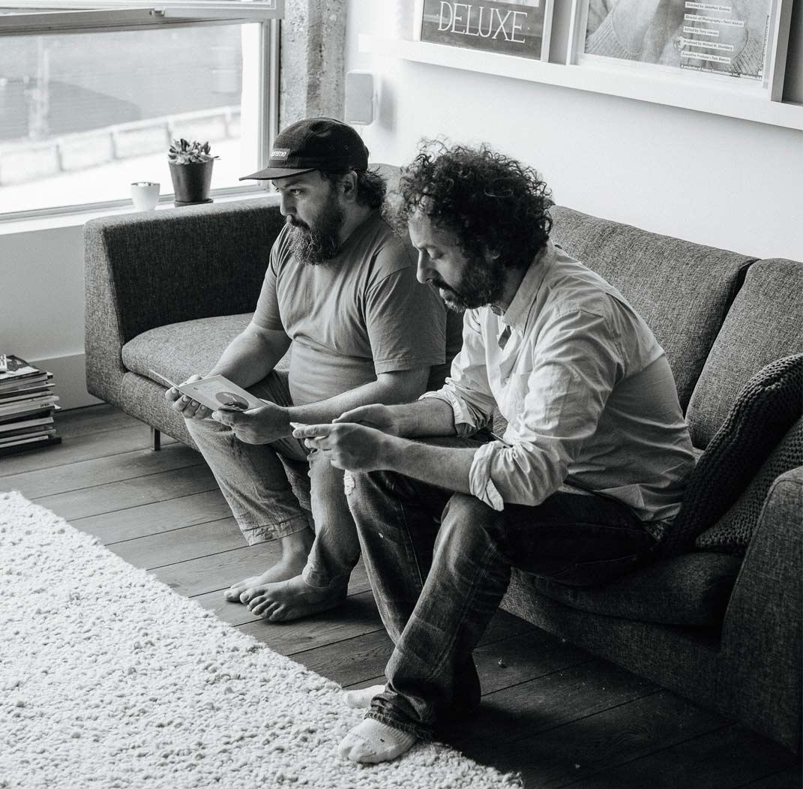
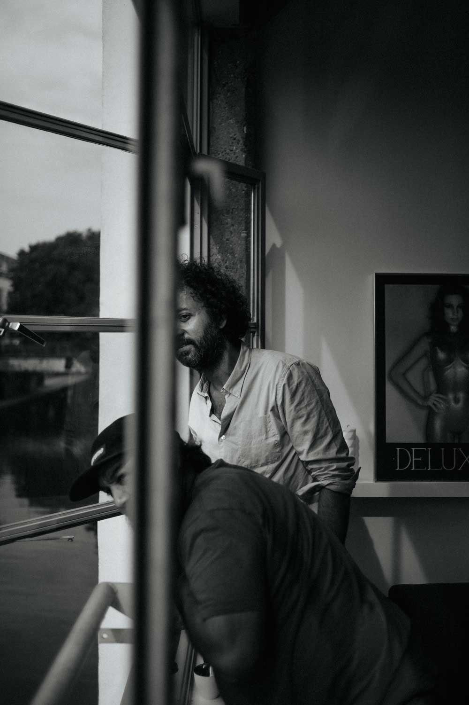

Ata and Trevor Jackson are two of the most intriguing DJs of their generation, not least due to all the things that they’ve done outside of DJing. Both have helmed influential record labels – Ata, Playhouse; Jackson, Output. In Frankfurt, Ata helped build a club, Robert Johnson, into one of the most respected venues for electronic music in the world. Jackson’s career in the UK notably includes award-winning graphic design for the likes of Soulwax, Stereo MC’s and The Jungle Brothers. In this conversation, held in Jackson’s London residence, the two explored these topics – and plenty more.
ATA & Trevor Jackson


Trevor Jackson: I remember seeing you for the first time. I thought you’d look very different, and I see this crazy guy wearing a long orange t-shirt...
Ata: My God. That was a long time ago.
TJ: I was a massive fan of Playhouse.
A: I was a big fan of Output.
TJ: And then we did a record together.
RBMA: What was the record?
A: One side was a remix of Black Strobe and one side was a remix of Captain Comatose. Trevor, you did one side of the cover with your cat and I did...
TJ: ...the other side with your dog.
A: That was the ping-pong.
TJ: We’re the same age, so we grew through the same cultures, but in different countries. We’ve had parallel lives. We’re both visual people, we both run record labels, we DJ. Crazy. Like doppelgängers, right?
A: Doppelgängers.
As much as the biographies are similar, there are also differences.
TJ: Yeah, I mean this guy’s a crazy, drinking, womanizer kind of maniac, and I don’t drink alcohol, take any drugs and probably don’t have sex with as many women as he does.
A: That’s why he looks better than me!

Did the Summer of Love play a big role for you, Trevor? As in using ecstasy as a vehicle...
TJ: No. I took ecstasy maybe three times in my whole life. I took an ecstasy tablet in 1989 at a Boy’s Own party where Andrew Weatherall and Terry Farley were playing and it didn’t do that much to me really. I used to smoke a lot of weed, ‘cause I was into hip hop. I don't know. That Summer of Love thing wasn’t about drugs for me at all. It was about really great parties. I think the more fucked up you are, the less aware you are of whether the music’s good or not. I’m not judgemental. But I’m into the purity. Maybe it’s a cliché but I want to feel natural experiences as much as possible in my life. I want to taste things that are pure and fresh, and unpasteurized. But it’s weird, because you’ll be at a club and everyone’s fucked and the record is so bad and you’re like, “What? How can everyone think this is a good record?”
A: It’s so boring. To see one of these modern, minimal house DJs take out the bass, make some noises or filters, and then have the bass come back.
TJ: I think we grew up when music was more than music.
A: Yes.
TJ: So for me, and I’m sure for you, the culture is fundamental. With everything I do, I think about the greater picture. I think about how that track is going to fit in – or how it won’t fit in – and the effect it creates. I think we also grew up at a time when things were more conceptual. Take the Daft Punk [Random Access Memories] album for example. Everyone’s talking about this crazy amount of hype around it, but I’m thinking, “That’s how every record used to be when I grew up!” Grace Jones, Frankie Goes To Hollywood, ABC: they all had big campaigns. They had visuals, they made videos, they had adverts everywhere.
A: But of course it’s different. They go to real, proper studios. They sometimes worked for weeks on tracks. Each one had a story. And this is why you can listen to these tracks thousands and thousands of times.
But that’s also maybe due to the fact that those guys used to play for eight hours. These days you have these huge line-ups with people playing one-and-a-half hours...
TJ: I think – even now – the people that are the most important DJs are the ones that have an agenda beyond “I wanna go out, play records, get fucked, earn loads of money and have fun.” The ones that say, “I have a mission.” Theo Parrish has an agenda, you know? He doesn’t just play records for the fun of it. And there’s a power behind that.
A: It’s the same for Ben UFO I think. But there are only a few DJs where you can say they really think about playing a record. To have a sound. It’s like this Metal Dance thing you did, Trevor.

"Some people need to feel that family kind of thing. If anything, I’d rather be seen as an outsider."
I mentioned the Summer of Love earlier because I think that’s where you took different paths. Trevor, you became an integral part of the uk’s hip hop scene. And I think, at the time, Ata was much more about the German techno rave thing.
A: Yeah! Techno rave scene. But there was a time when I heard “Who Is Elvis?” and thought, “OK, forget all this techno shit.”
You were not really into hip hop during that time, right?
A: Nothing. I forgot hip hop after Schoolly D.
TJ: Really? Because, for me, they were parallel. The path from electro to hip hop. And then house music kind of came at the same time. And then hip house. But after hip house I got completely out of house music. This was around that time I took my first E. Piano house started coming in, like Black Box’s “Ride On Time.” I didn’t want anything to do with a 4/4 beat.
Why? Too superficial?
A: Cheesy.
TJ: Cheesy, and everyone was... I’d been going to all these underground raves and semi-legal things, and then there were these official parties in London and the whole scene just changed. It became totally commercialized and the music just lost something for me. What got me back into techno and house music was Kompakt and Thomas Brinkmann. At that point I was listening to Tortoise and post-rock and...
Why did you get disillusioned by hip hop?
TJ: The lyrics. I've always listened to the music and the lyrics, so I remember an Ice Cube record that came out that was all about white bitches. And I was in a club with some friends and I was like, “Are you listening to the lyrics? How can you fucking dance to this record?” And they went. “Oh no. We’re just listening to the music.” I think that’s when trip-hop started anyway, so I got more involved with Mo’ Wax and instrumental, downbeat, experimental hip hop. Did you start Playhouse around the same time that Kompakt began?
A: We started maybe one, two years before. The Cologne sound was, for me, amazing. An amazing trip.
“I have huge respect for those who produce music. To go to the studio for me is like going to church.”
Trevor, what attracted you to Kompakt? It’s very German.
TJ: The Thomas Brinkmann records reminded me of Steve Reich or post-punk because it was cut up. I wasn’t into the shuffle sound, but those early Kompakt records had something quite... It sounded like experimental dance music. The Thomas Brinkmann series with all the girl’s names fitted together for me with all of the Tortoise records and Chicago post-punk stuff, because it was experimental dance music. It had a twist to it which I hadn’t heard for five or more years. A lot of the Detroit stuff was a bit cold to me. It didn’t have any sex to it, it didn’t have any humour.
A: It was cold.
TJ: It was cold. Whereas those records had a bit of wit, even though there was something quite Germanic about them. It’s not that they were fun.
A: Did you ever get into Black Dog, Kirk Degiorgio and the Artificial Intelligence stuff?
TJ: I wasn’t too into that. Some of the Kompakt records were almost like hip hop because they were quite simple and raw. I think I like things a bit more like that. Whereas a lot of the Kirk Degiorgio material was more musical.
Baroque almost, compared to Kompakt.
TJ: The whole acid jazz thing, for instance. Some of that interested me, but then it started getting too jazzy, too showy. I like things to be tough. But with a bit of a twist to it. Even now I like records that are quite solid.

“Theo Parrish has an agenda, you know? he doesn't just play records for the fun of it.
You guys have both been involved in almost every aspect of the creation of a record. But, Ata, you never really produced music.
A: No, never. I never made a lot of time for that, and I have huge respect for those who produce music. To go to the studio for me is like going to church.
TJ: When I had my label I managed to put out my Playgroup record, but part of the reason I stopped the label was because it stopped me from doing the things I love. I was resenting the fact that I couldn’t make music. It’s very hard, I think, to do both.
A: Forget it. After Playhouse started, to also have the club, Robert Johnson, and the DJing; the touring. And I love to make food, so we started this small restaurant as well.
TJ: You see, I don’t do that. He makes food, I make music.
You never started a club?
TJ: I’ve done club nights, but I’ve never started a club. I’d love to. That’s one thing I’ve always wanted to do.
A: I would love to see it.
How would you design the club?
A: I think I know how your club would look, Trevor.
TJ: Oh yeah? I’m interested. Go on, tell me. What do you think?
A: I think it’s, of course, minimal and black. A lot of glass and a little bit of metal. A good soundsystem, of course, and wood.
TJ: Nah…
A: No?
TJ: My club would have no lights. It’d be pitch black. With mirrors… And I’d want to be able to control everything. The DJ booth would have light controls, temperature controls, smell controls. I’d want it so you could make people sweat or be able to pump the smell of something...
A: That’s good!
Do you think there is enough attention paid to lighting in clubs? If you look at classic New York clubs, they always had a person doing the lights.
TJ: When I’m in a club the biggest fight I have is with the lighting guy.
A: Always.
TJ: I’m always telling them to turn the fucking lights down.
A: They have no feeling for the music. Nothing.
"We've had parallel lives. we're both visual people, we both run record labels, we dj. crazy. like doppelgängers, right?"
TJ: For me, though, the worst thing that happened in clubs was when they put the DJ in the spotlight. Like, why should you even see the DJ? You come to hear the music. Part of the reason I don’t make much music is I’m not interested in performing. For me, DJing is not a performance. I don’t want people to watch me, I just want to get into it and play my music. That – to me – is what fucks up the whole thing: when a DJ becomes this performer. You don’t want some fucking people dancing next to you and like… The thing is, what’s happened is: culture has become lifestyle. That’s it. I would say all the problems in the creative industries are down to that. Instead of being something you are a part of – or that you contribute towards – culture is now something you buy. Nothing I’ve ever created has wanted to be part of something. I feel confident enough about what I do that I don’t need to be part of anything else. Some people need to feel that family kind of thing. If anything, I’d rather be seen as an outsider.
One of your first contributions to music culture was your cover designs. Do you remember the first record you designed?
TJ: The first record I designed, I think, was “Theme From S-Express.”
A: No...
TJ: Yeah. Or Raze’s “Break 4 Love.”
A: Shit, Trevor!
TJ: Did you not know I did the cover to that?
A: No! What a nice surprise! These were some of my favorite covers of that time. I think the first time I really noticed design was Peter Saville. [New Order’s] “Blue Monday.” I said, “OK, wow. You can do something really different with covers.”
Trevor, I think you once said you were unimpressed by Peter Saville...
TJ: No, did I?
When you first started doing covers.
TJ: Oh no. At that time when I was doing covers like that I was like 20 or 21. I met Peter Saville, I met Storm Thorgerson from Hipgnosis. To me, they were, like, old fuckers. I was like, “You’re 35 years old. What do you know about dance music? You’ve never been to a fucking club before, mate.” I was an arrogant little fucker going out every night. So they didn’t mean that much to me then. I loved his work, but it’s more like what all those older guys stood for. Peter’s an exception. But a lot of the other people at the time would just put a photo with a shitty bit of type on it. They were really boring covers. I’ve said it before, but it was all these older men designing for young people. I don’t think they really understood what was going on. I was there. I was going to clubs every night, and I just felt that I deserved to be doing it more than…
So that was the punk in you, then?
TJ: Yeah, it certainly was. But, no, Peter Saville to me is, without a doubt, the best.

How did you go about making those sleeves? You didn’t use the computer, right?
TJ: I did them by hand.
A: I think that’s the best way for me. The computer is a tool, but I think the best thing that you can do is buy…
Scissors and paper?
A: Of course.
TJ: It’s the same for me with making music at the moment. It took me a lot of years to realize it, but making music is so much about performance. When I've sat there programming with a mouse, it's not about performance. It's a different thing. It's not as intuitive. With analogue machines, I play around more; I have more fun. And it was the same when I was designing. I was cutting things up, sticking things down, taking things off. It was a physical thing. I’m trying to detach myself from the computer as much as possible.
Those early designs look very computerized, though.
TJ: Yeah, but the thing you’ve got to remember is that this was meant to look like a ZX Spectrum. All the big design agencies had £20,000 computers, and I was like, “You know what? I don’t need an expensive computer to make it look like it came from one.”
Can a cover work on its own without the music?
A: I mean, the covers that you did at this time fit the music. And this is why... you have to listen to the music.
TJ: Well, some people don’t. I think Peter Saville designed [Joy Division’s] Unknown Pleasures without even hearing the album. But I can’t design a record without listening to it. To me, it’s a visual representation. They work together.
A: Yeah. Or you make something so contrasting that it fits again.
So it’s inseparable, music and design?
TJ: No, but if I’m asked to… Ever since I watched [Walt Disney’s] Fantasia as a kid, that was it for me. And there's Oskar Fischinger, the German animator. He did this thing where it basically describes a classical piece of music. The first time I saw that I was like, “That’s what my life is all about.” Sound and light, sound and image.

Music – for many people who are into design and art nowadays – is more like wallpaper.
TJ:
At the moment, there’s never been a worse time for art and music to be together. I think about the ’60s, ’70s, ’80s... They were integrated. Keith Haring and Grace Jones, Rauschenberg, Talking Heads. These things were interconnected. Now, you have what? Steven Klein and Lady Gaga. Or Jay-Z with Marina Abramović. It’s just bullshit. I’m sure you DJ at art or fashion events, Ata. They will always wanna hear shit music.
A: Of course.
TJ: There are a few people I can play for, but generally the art and fashion crowd know fuck all about music. They just wanna hear…
A: Easy music, only easy music.
TJ: There are artists like Carsten Nicolai and Raster-Noton, but that’s a very particular thing. Generally I think there’s very little connection between art and fashion and music. But you, Ata, know as much about music as you do about art, as you do about furniture, as you do about film, as you do about food – right? I think you, culturally, are quite diverse.
A: I always like good things. I’m as interested in YouTube as I am in this lamp.
TJ: I think it’s a strange time. It upsets me that they’re so completely apart, you know? I think it’s sad. And that’s, again, maybe because these things have become a lifestyle. A great culture combines. Think about youth movements. Probably hip hop was the last most powerful one. You had music, you had political awareness, you had dance, you had fashion, you had art.
Rave culture?
TJ: Visually, rave culture was not as unique in a way. It was far more referential. You think about the Summer of Love, and it was all smiley faces. Quite psychedelic, quite hippy. It wasn’t looking forward so much. Perhaps. I don’t know.
It was more about individualism than about society? In an egotistical way, I mean. Being together was the main thing, instead of acting together for something.
TJ: Rave culture, for me, was definitely about unity. It’s a cliché, but it was rich kids next to poor kids. Guys that worked in McDonalds next to mechanics next to art students. It was a total mix and, because everyone was on MDMA, they fucking loved each other.
A: In Germany, we didn’t have a Summer of Love.
Germany had the Love Parade.
A: And I played early on. It was beautiful. Then, five years later it was the biggest, commercial shit thing in Germany. It was so stupid. And the music got worse every year. The music went shit, more shit, double shit, triple shit and, in the end, it was like… I mean, how can things go this way, you know? To start with underground music, and ten years later to have that absolute disaster.
TJ: I think the Summer Of Love could only happen in the UK because we’re blessed with such a culturally diverse mix of people. I love living in London because there’s literally nowhere else like it.

“Frankfurt is a hard city, so if I can do what I did there, I can do it in every fucking city in the world.”
Do you think you could live anywhere else and do the same things you do – or did?
A: Yes. I mean, Frankfurt is a hard city, so if I can do what I did there, I can do it in every fucking city in the world.
Hard city in which way?
A: Frankfurt is fucking posh. There is a lot of money, and it’s full of bankers that have no taste. And they want all this handbag house music. We have a small story in Frankfurt. Dorian Gray, Sven Väth... But that’s it. And then there’s the Robert Johnson. Robert Johnson is not a discothèque for selling alcohol, it’s a discothèque for listening to music. It’s wood, there’s a good soundsystem and no lights. Only the river takes people’s attention away from the music.
TJ: You’ve got a worldwide reputation. It isn’t just a club that is known within the city. It’s like the best club in Europe, you know? Everyone used to say to me, “If you play anywhere, you’ve got to play at Robert Johnson.”
A: And this is why there is nothing. The attention is on the soundsystem and the DJ that’s playing. That’s it.
TJ: And the people.
A: And the people, of course.
Why is it so hard to build a good club?
TJ: It’s financial more than anything else, isn’t it?
A place like Robert Johnson is very small. Of course it costs money to build it, but the concept could be transported to almost any city.
A: You can transport it to any city in the world but the owner of the club in that city has to understand the feeling of the club. It’s not to make money, yeah? To have this family thing going on in a club is hard. The Body & Soul party in New York was similar. On Sunday this special audience of people came to dance. That was like a church, though. I don’t know what we are at Robert Johnson, but we are not a church. The main thing is that people don’t feel like they are going to a discothèque. We are a club, and we have members also, and you go there as a family, you know? We have a strict door policy, and sometimes that’s hard for people, but it is what it is, so…
How long do you think one can run a club or label successfully? Not successfully in financial terms, but…
TJ: I think it’s hard to run anything for a long time now.
A: Yes.
TJ: Anyone can open a club that’s hot for a few months. But to keep it going – a club, a restaurant, a shop, a label, anything – it’s hard after the initial interest. Everyone’s quite fickle. They want to be into the next thing. Which, in some ways, is interesting because it creates a huge amount of new things happening. But I think as I get older I appreciate things that are more timeless and classic.
Share this article: